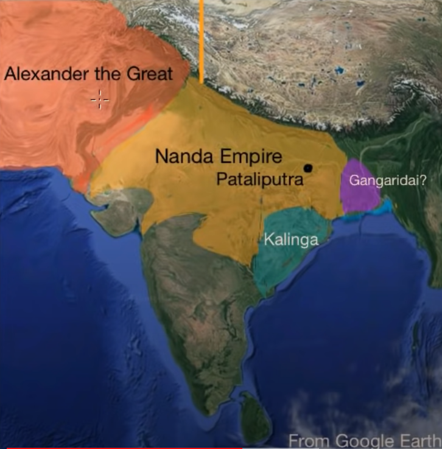
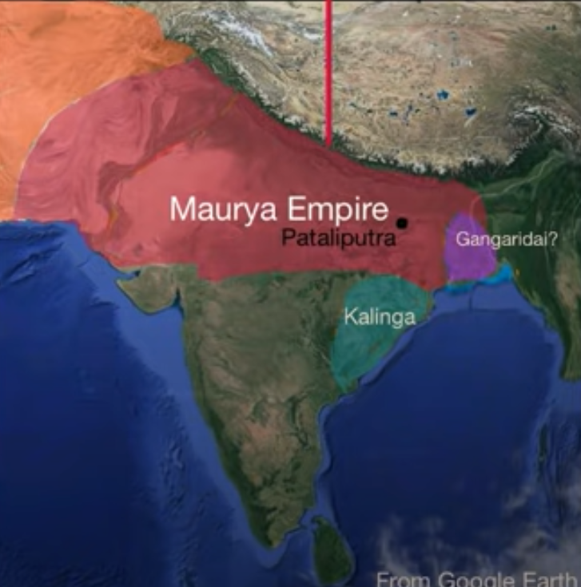
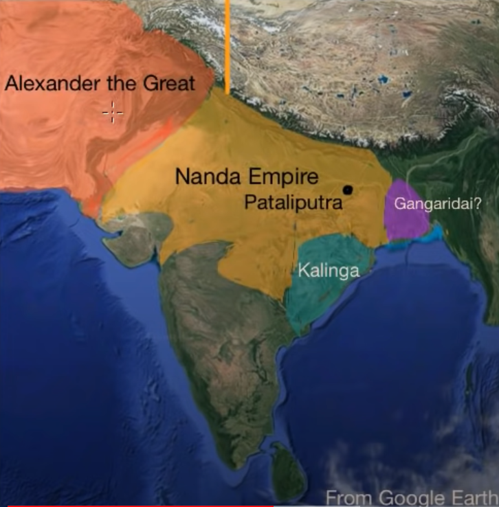
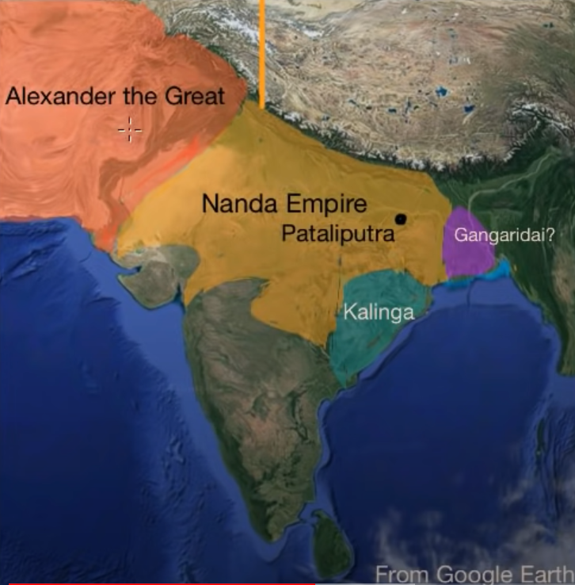

Starting with Chandragupta Maurya, he conquered the Nanda Empire and claimed some territory which the Greeks had previously conquered. Eventually he conquers the Seleucid Empire which was established after the death of Alexander and commanded by Alexander’s general named Seleucus. After being victorious over the Seleucid Empire Chandragupta Maurya marries one of Seleucus’ daughters. After this the Mauryan Empire was established.

These 2 images give you an idea how the empires were before and after the conquests of Chandragupta Maurya
Feats Under Bindusara
After Chandragupta decides to follow the Jain religion and leaves the kingdom, the empire is ruled by his son, Bindusara. Until now the empire was controlling lands in North India and it stretched up to present day’s Afghanistan. Bindusara now tries to spread the empire downwards, towards the south. But he doesn’t manage to conquer Kalinga. Bindusara then dies around 273 B.C.

This image shows how slowly Bindusara starts conquering Southwards
The Great Empire
After the King’s death, a civil war take place between his sons. Eventually his son Ashoka is victorious and rules the empire. Ashoka known as one of the greatest historical kings in India, sets up to conquer Kalinga. Around 261 B.C. he manages to gain power over Kalinga after a bloody war. Now the empire was spread almost across whole of India. But after the war of Kalinga, there’s a turning point for the empire and for Ashoka. He puts his feelings and thoughts about what happened in Kalinga onto Ashoka pillars. He wrote his feelings on rocks throughout the kingdom too.
Then he becomes a Buddhist and he establishes Buddhist temples throughout the kingdom. He also sends Buddhist missionaries throughout the world. After these events, Ashoka is considered as one of the main people who spread Buddhism throughout the world. He also did a lot of social works to help the public and citizens. Under his rule, the Mauryan Empire was the maximum extent of any empire that ruled India. There were approximately 50 million people under the Mauryan Empire.
He also established the Ashoka Stambha with along with the Ashoka Chakra. In modern day’s Indian flag, the Ashoka Chakra is on the centre. This shows the greatness of the Mauryan Empire and the greatness of the great ruler himself.
 
